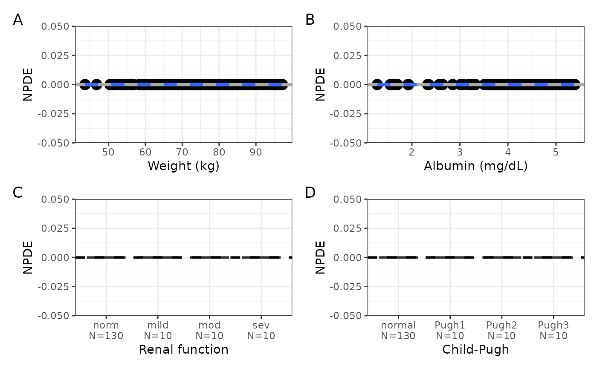
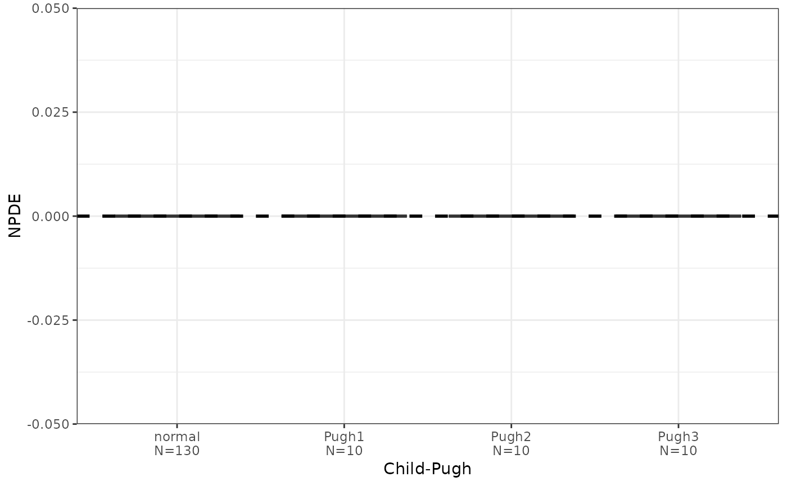

Get a single graphic of NPDE versus continuous and / or categorical
covariates (npde_covariate()) or get a list that can be arranged by the
user (npde_covariate_list()). See npde_panel() for other NPDE
diagnostic displays.
npde_covariate(df, x, ncol = 2, tag_levels = NULL, byrow = NULL)
npde_covariate_list(df, x)a data frame to plot.
character col//title for covariates to plot on x-axis;
see col_label().
passed to pm_grid().
passed to patchwork::plot_annotation().
passed to pm_grid().
npde_covariate() returns single graphic of scatter plot diagnostics
as a patchwork object that has been arranged using pm_grid() and
npde_covariate_list() returns the same component plots unarranged in a list.
Pass ncol = NULL or another non-numeric value to bypass arranging plots
coming from npde_covariate().
data <- pmplots_data_id()
cont <- c("WT//Weight (kg)", "ALB//Albumin (mg/dL)")
cats <- c("RF//Renal function", "CPc//Child-Pugh")
npde_covariate(data, x = c(cont, cats), tag_levels = "A")
#> `geom_smooth()` using formula = 'y ~ x'
#> `geom_smooth()` using formula = 'y ~ x'

npde_covariate_list(data, x = cats)
#> $RF
#>
#> $CPc

#>
#> attr(,"class")
#> [1] "pm_display" "list"